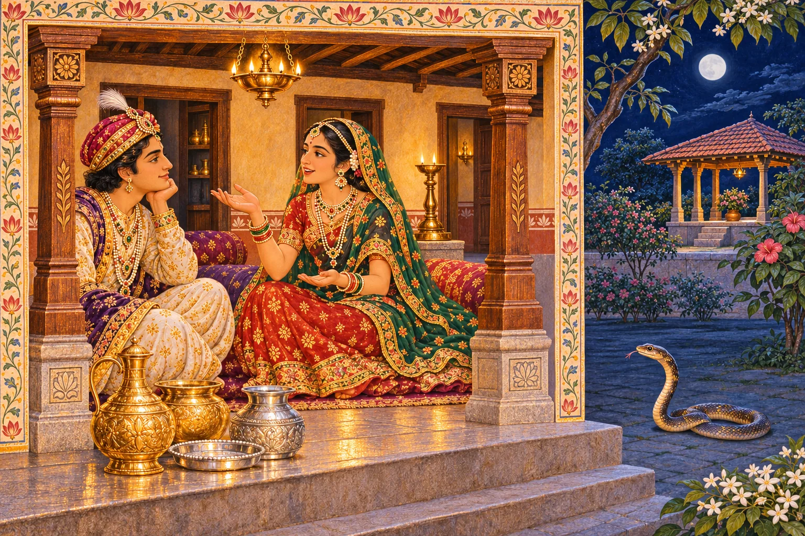
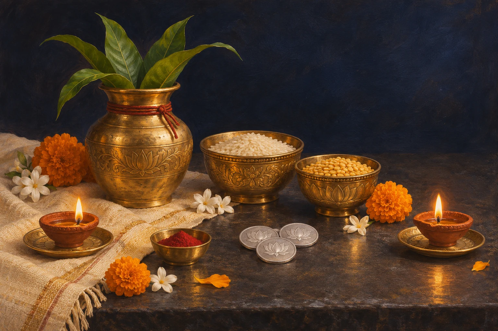
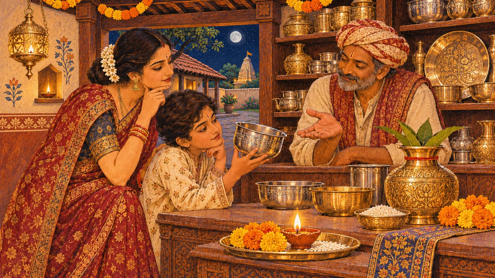

The first light of Diwali invites us to ask what makes a household truly rich: health, honest work, care and generosity.
When is Dhanteras?
Friday, 6 November 2026
Krishna Trayodashi · the waning fortnight’s thirteenth tithi
Your local puja time
Check the puja window for your city’s sunset and your family’s tradition. Open the panchang below, select your city and confirm the year is 2026.
Find your city’s date & timing ↗Reference date: Drik Panchang’s New Delhi listing. Your local observance date and puja window may differ.
Why can dates differ?
Festivals follow lunar tithis and the time prescribed for each observance. Local sunrise, sunset and regional traditions can place an observance on a different civil date. Follow the panchang used by your household or temple.
The threshold of Diwali

On the thirteenth lunar day of the waning fortnight, homes begin to glow with the first lamps of the Diwali season. This is Dhanteras, also called Dhantrayodashi: dhan means wealth and trayodashi means the thirteenth tithi. Yet its meaning is wider than buying gold. It asks what makes a home truly prosperous: health, food, dignity, trust, generosity and a sense of enough.
Dhanteras gathers several traditions into one evening. Lakshmi is welcomed as the goddess of abundance; Kubera represents the stewardship of riches; Dhanvantari is revered as the divine physician; and a small lamp for Yama recalls the fragility and preciousness of life. The traditions vary by region and household. They do not need to be reduced to a single origin story.
The ocean of milk and the nectar of healing

In the celebrated account of the churning of the ocean, devas and asuras join in a difficult undertaking. Mount Mandara becomes the churning rod and the serpent Vasuki serves as the rope. The ocean releases extraordinary treasures, but the process is neither simple nor free of danger. Before the nectar of immortality appears, the world must confront the terrible poison that Shiva contains.
Among the divine manifestations associated with the churning is Dhanvantari, often depicted emerging with the vessel of amrita. Festival retellings also connect Lakshmi’s emergence from the ocean with this season. The imagery offers a beautiful lesson: healing and prosperity are not effortless prizes. They require patience, shared work and discernment. The precise order and details of the treasures differ across textual traditions.
Textual reference: Bhagavata Purana 8.8. This is a sacred narrative, not a historical dating of the festival’s beginnings.
Dhanvantari: the wealth called health

Dhanvantari is honored as the divine physician and a central figure in the sacred imagination of Ayurveda. His iconography commonly includes a vessel of nectar and, in some representations, medicinal or healing emblems. Dhanteras therefore also carries the name Dhanvantari Trayodashi.
This aspect of the festival is especially meaningful for families living far from India. A prayer for good health can be accompanied by ordinary acts of care: checking on an elder, preparing nourishing food, taking prescribed medicines correctly, and making time for rest. Devotion and evidence-based medical care need not be in conflict; a prayer is not a substitute for treatment.
The prince, the serpent and a night of light

A much-loved folk legend tells of King Hima’s son, whose horoscope foretold death by snakebite on the fourth night after his wedding. His young wife refused to surrender to fear. She placed ornaments and coins at the doorway, lit lamps everywhere, and kept her husband awake with songs and stories.
When Yama approached in the form of a serpent, the dazzling light and the bright heap of ornaments delayed him until dawn. The prince survived. Versions of the tale differ in details, but its emotional heart remains the same: courage, alertness and love can turn a night of dread into one of hope. It is folklore, not a guarantee that lamps or valuables prevent harm.
This is household folklore; no definitive scriptural verse attribution is claimed here.
The quiet lamp at the doorway

Many households observe Yama Deepam or Yamadeepdaan on Dhanteras evening. A small oil lamp is placed safely near the entrance or another suitable place, often oriented toward the south according to family custom. It is offered with a prayer for the wellbeing and long life of loved ones.
If you live in an apartment, a protected lamp indoors—or an electric diya where flames are restricted—is a sensible adaptation. Keep all flames away from curtains, children, pets and unattended spaces. The ritual is an act of remembrance and reverence, not a reason to take safety risks.
Why people bring home a new vessel


Across many communities, Dhanteras is a day to buy something durable: a small brass or steel utensil, a silver coin, jewellery or an item genuinely useful to the home. The object is a symbol of welcoming abundance and caring for household resources. It is not a requirement to spend beyond your means.
For a student or young family, even a simple kitchen bowl, a notebook for financial planning, or a contribution to someone in need can express the day’s spirit. Buying on credit merely to follow a trend misses the deeper message. If purchasing precious metals, compare prices and purity and keep receipts.
A simple Dhanteras puja at home

Clean a small area and arrange a diya, flowers, water, fruit or sweets, and images of Lakshmi, Ganesha, Dhanvantari or Kubera according to your household tradition. Bathe, wear clean clothes and begin in the evening during the locally applicable pradosh period. Light the lamp safely and offer flowers and food with gratitude.
Recite a familiar prayer or simply speak sincerely: “May this home have health, honest livelihood, wisdom and the ability to share.” Some families recite Lakshmi or Dhanvantari mantras and perform aarti. Conclude by sharing prasad and, if customary, offering Yama Deepam. No one universal sequence is obligatory across every Hindu community.
Celebrating wherever you live
A small apartment, a shared student kitchen or a family home can all hold the first lamp of Diwali. Choose what fits your space and means. Use a panchang for your own city when planning worship; a community gathering may be scheduled on a different day.
Read the story with children, call relatives and set aside food or a gift for someone in need. Continue with the full Diwali guide for the rest of the season.
Sources and date verification
Reference dates rechecked 5 November 2026 against Drik Panchang’s New Delhi listings. Select your own city for local observance and puja timings. Scriptural narratives and household folklore are identified separately.